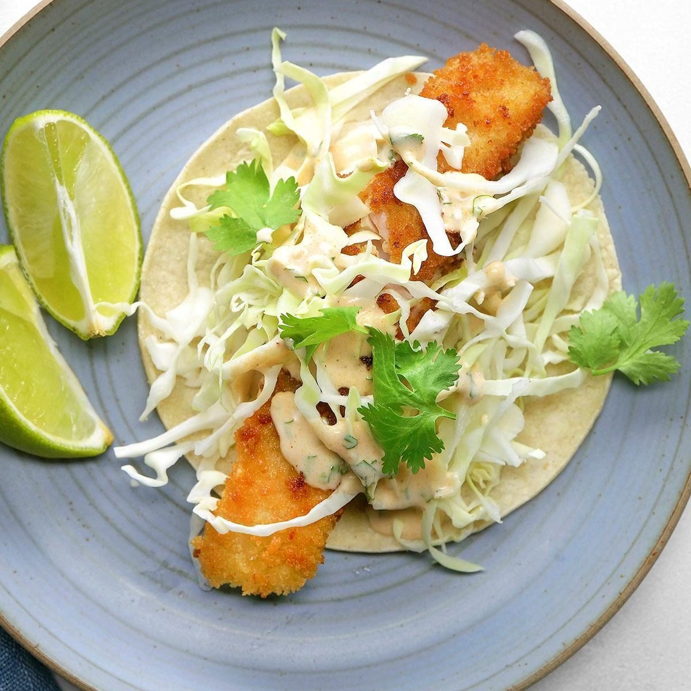
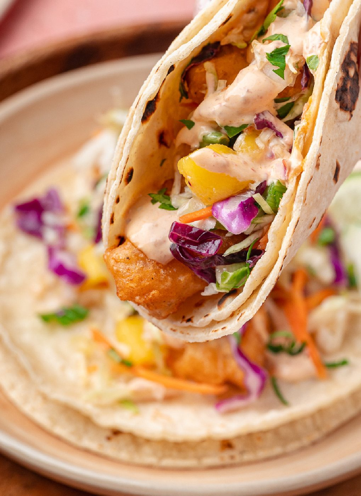
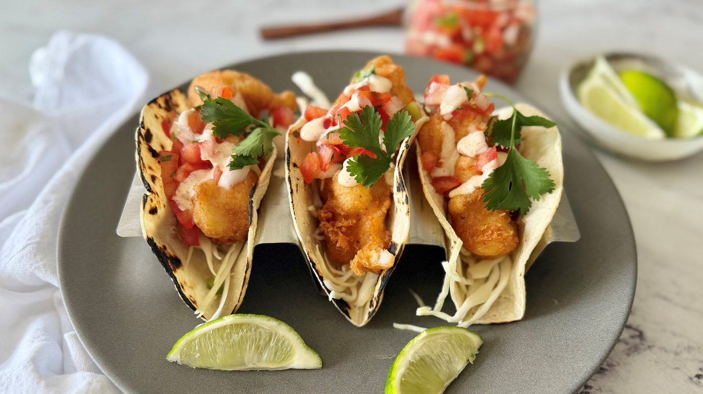
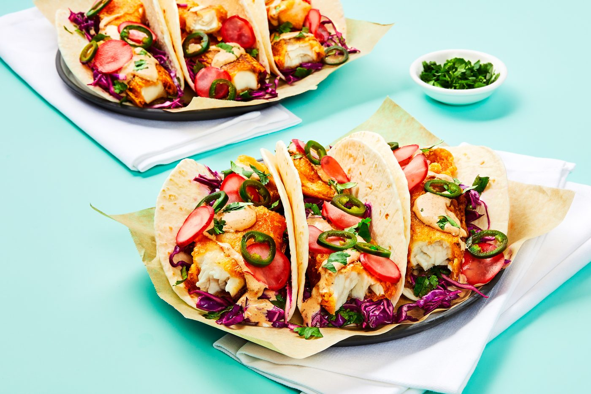
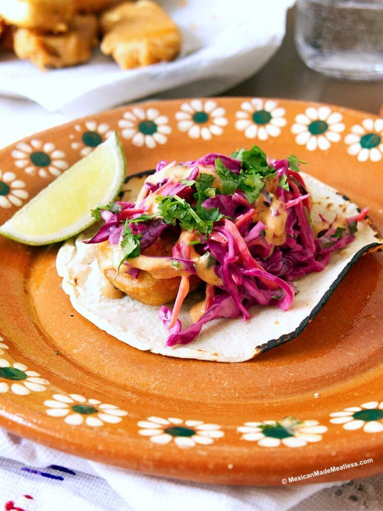
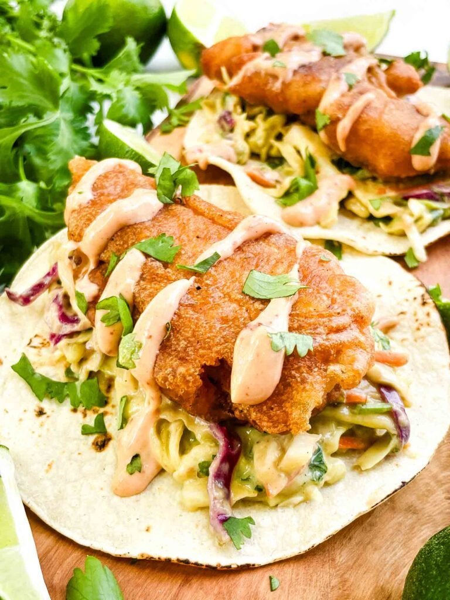
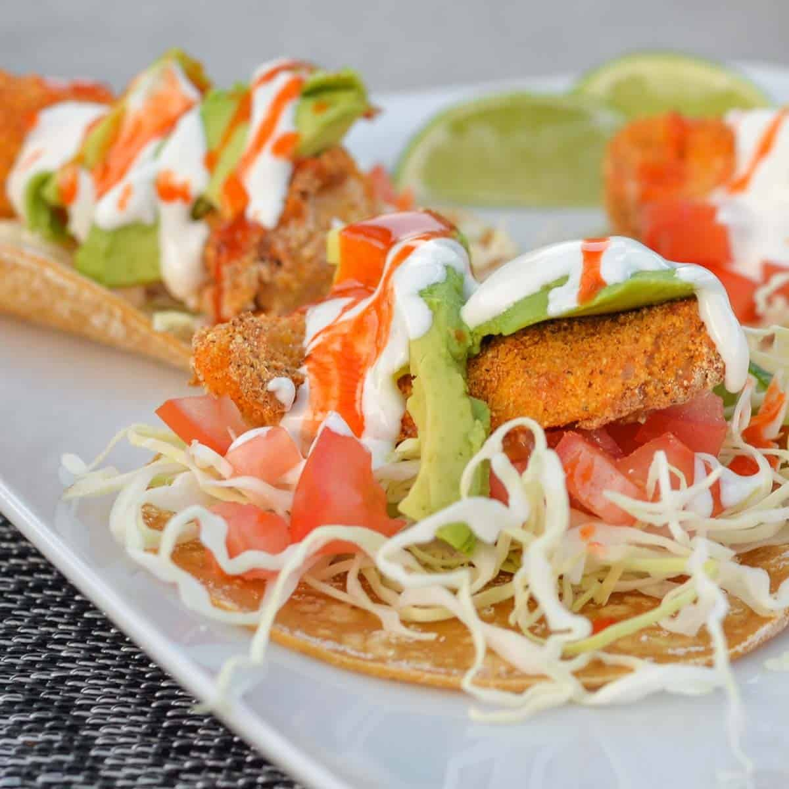

← Street Food
Baja Fish Tacos
Beer-battered fish, cabbage crunch, lime crema — invented by Japanese immigrants in Baja, perfected by everyone since.
Beer-battered fish, cabbage crunch, lime crema — invented by Japanese immigrants in Baja, perfected by everyone since.
The fish taco story runs through Ensenada and San Felipe, where Japanese immigrants introduced tempura-style frying to local catch in the 1950s. The result is its own thing: strips of white fish in a light beer batter, tucked into warm tortillas with shredded cabbage, pico de gallo, and a lime-heavy crema — street food with a seafood counter's soul.
Three textures must survive the trip to your mouth: shattering batter, flaky fish, cabbage snap. So the batter stays cold (ice-cold beer, no overmixing — lumps are fine, gluten is not), the oil stays at 190°C / 375°F, and the cabbage gets salted and lime-dressed just before serving. The crema is mayonnaise, Mexican crema and lime whisked loose. Nothing exotic; everything in balance.
serves 4 — tick items off as you shop; it saves as you go
Toss cabbage with a pinch of salt, squeeze of lime and cilantro; rest 15 minutes, then drain any puddle. Whisk mayo, crema, lime juice and a pinch of salt until pourable.
Cut fillets into 2 cm strips. Pat bone-dry — wet fish makes wet batter slide off. Dust lightly with flour; the batter grips dusted fish.
Whisk flour, cornstarch, baking powder, 1/2 tsp salt; pour in the coldest beer you have and stir 10 seconds — lumps are correct. Overmixing develops gluten and makes it bready. Use within 10 minutes.
Dip, let excess drip, fry 2-3 minutes to deep gold, turning once. Drain on a rack. Between batches, give the oil a moment to return to temperature — dropped oil means fat-soaked batter.
Dry comal or skillet, 20 seconds per side until they puff slightly and smell toasted. Wrapped in foil in the oven works; the microwave makes them gummy — avoid.
Tortilla, crema, cabbage, fish, pico, jalapeño slices, more crema. Two tacos per plate, lime wedges everywhere. Eat standing up for maximum authenticity.







Images are web-sourced via image search and self-hosted. Original sources:
https://z-cdn.chatglm.cn/image-search-mcp/images-ppt/3224f1c3cea1.jpghttps://z-cdn.chatglm.cn/image-search-mcp/images-ppt/4ef366f47b31.jpghttps://z-cdn.chatglm.cn/image-search-mcp/images-ppt/696374446b63.jpghttps://z-cdn.chatglm.cn/image-search-mcp/images-ppt/7dcacf88ac46.jpghttps://z-cdn.chatglm.cn/image-search-mcp/images-ppt/ed1bc5a0a9c0.jpghttps://z-cdn.chatglm.cn/image-search-mcp/images-ppt/f61cfeb6cd96.jpghttps://z-cdn.chatglm.cn/image-search-mcp/images-ppt/f838b5d2949b.jpgVerified working videos — click a card to load the embed.


Powered by GitHub Issues — the backup kitchen. One issue per recipe; your comment lands in the repo.